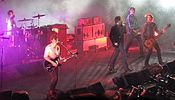
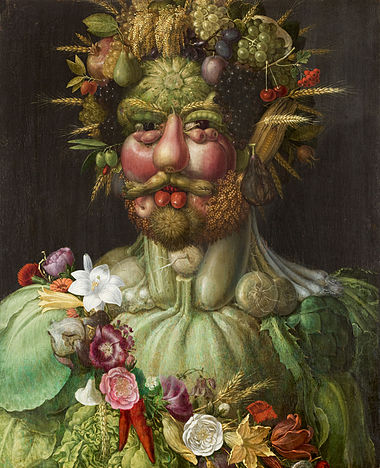

- Arts
- Biography
- Geography
- History
- Mathematics
- Science
- Society
- Technology
- All Portals
From today's featured article
Powderfinger, an Australian rock band, formed in Brisbane in 1989. From 1992 to 2010 the lineup consisted of vocalist Bernard Fanning, guitarists Darren Middleton and Ian Haug, bass guitarist John Collins and drummer Jon Coghill. The group's third studio album, Internationalist, peaked at No. 1 on the ARIA Albums Chart in September 1998. Their next studio album, Odyssey Number Five, reached number one in September 2000 and was certified eight times platinum, shipping over 560,000 units. Their next three studio albums also reached number one: Vulture Street (July 2003), Dream Days at the Hotel Existence (June 2007) and Golden Rule (November 2009). Powderfinger earned the third-highest total of ARIA Awards (18), after Silverchair and John Farnham. Their last tour, the Sunsets Farewell Tour, concluded on 13 November 2010. In November the following year, the band published a biography with Dino Scatena, a rock music journalist, called Footprints: the inside story of Australia's best loved band. (Full article...)
Did you know...
- . that London's Hanover Lodge (pictured) sold for £120 million in 2012, but the underground swimming pool, which converts into a ballroom, is considered "too small"?
- that Hans Larwin painted Soldat und Tod in 1917 when he was the official war painter for the Austria-Hungary dual monarchy?
- ... that fossils from the Paleocene period have been found near Saunders Creek, Alberta, including an upper molar from a possible pantodont?
- ... that the voice of Hawaiian soprano Nani Alapai was compared to the music of the singing snails?
- ... that a Taiwanese religious movement teaching feng shui and I Ching since 1984 now has around 300,000 members?
- ... that the American Leonie Turpeau, the Nicaraguan Maymie de Mena, and the Jamaican Madame Aiken were the same person?
- ... that in the upcoming film LAbyrinth, Johnny Depp portrays a detective investigating the murders of Tupac Shakur and The Notorious B.I.G.?
- ... that Denver, Colorado, philanthropist Helen Bonfils inherited US$14 million from her father and US$10 million from her mother?
In the news
Powderfinger, an Australian rock band, formed in Brisbane in 1989. From 1992 to 2010 the lineup consisted of vocalist Bernard Fanning, guitarists Darren Middleton and Ian Haug, bass guitarist John Collins and drummer Jon Coghill. The group's third studio album, Internationalist, peaked at No. 1 on the ARIA Albums Chart in September 1998. Their next studio album, Odyssey Number Five, reached number one in September 2000 and was certified eight times platinum, shipping over 560,000 units. Their next three studio albums also reached number one: Vulture Street (July 2003), Dream Days at the Hotel Existence (June 2007) and Golden Rule (November 2009). Powderfinger earned the third-highest total of ARIA Awards (18), after Silverchair and John Farnham. Their last tour, the Sunsets Farewell Tour, concluded on 13 November 2010. In November the following year, the band published a biography with Dino Scatena, a rock music journalist, called Footprints: the inside story of Australia's best loved band. (Full article...)S
On this day...
March 16
- 597 BC – Babylonian king Nebuchadnezzar II captured Jerusalem and installed Zedekiah as King of Judah.
- 1322 – Despenser War: A royalist army defeated troops loyal to Thomas, 2nd Earl of Lancaster, in the Battle of Boroughbridge, which allowed King Edward II of England to hold on to power for another five years.
- 1872 – In the first-ever final of the FA Cup (trophy pictured), the world's oldest association football competition, Wanderers F.C. defeated Royal Engineers A.F.C. 1–0 at The Oval in Kennington, London.
- 1962 – Flying Tiger Line Flight 739, a charter flight carrying U.S. and South Vietnamese soldiers, disappeared without a trace, prompting one of the largest searches in the history of the Pacific.
- 2003 – American peace activist Rachel Corrie was crushed to death by an Israel Defense Forces armored bulldozer in Rafah as she was protesting the demolition of a house.
John Pope (b. 1822) · Sienna Guillory (b. 1975) · Jean Bellette (d. 1991)
Today's featured picture
Vertumnus is a painting completed by the Mannerist painter Giuseppe Arcimboldo in Milan c. 1590–1591. It depicts the Holy Roman Emperor Rudolf II as Vertumnus, the Roman god of metamorphoses in nature and life. The fruits and vegetables symbolize the abundance of the Golden Age that had returned under the Emperor's rule. The painting is now held at Skokloster Castle.